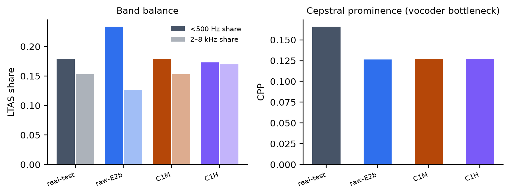
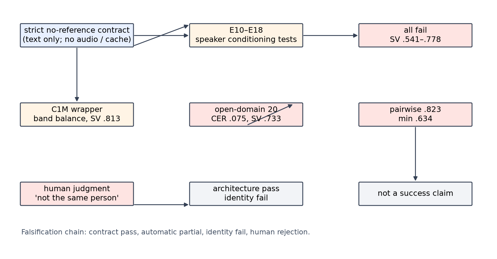

声音 C 实验论文 v1.0（开放域复核版）
2026-11-21
基于 GPT-SoVITS V5dev（本地包 2026-10-06）的离线实验记录
范围与诚实声明：本文从“只输入日文文本、完全不读参考音频/文本/参考特征”的推理合同开始，不包含游戏解包、文本抽取等前置工作。所有数字来自本会话的本地评测；没有公开音频、角色语音或模型权重。文中把“合同通过”“自动指标部分通过”“人耳验收失败”分开写。最终结论是负结果，不是成功交付。
本文研究一个问题：能否在不读取任何参考音频、参考文本或参考特征的条件下，用 GPT-SoVITS V5 单说话人地生成目标角色 Kan 的日文语音，并让训练学到的说话人参数真正进入声学模型。
我们实现了严格无参考推理路径：S1 不使用提示，S2 使用 prompt_len=0、refer_mel=None、refer_spec=None，ge 直接取学习到的 spk_emb；STRICT_NO_REF=1 时 torchaudio.load 与 set_ref_audio 直接抛异常；先填满参考缓存再切到无参考时，缓存会被清空；参考目录改名后新进程仍能生成 48 kHz 音频。合同门通过。
但说话人身份没有成立。50 条 held-out 台词、3 个采样 seed 的 SV 均值为 0.8258，同文本参考控制为 0.8938；20 条完全新编的开放域文本 CER 为 0.0754，目标 SV 只有 0.7332，20 条输出两两相似度均值 0.823、最低 0.634。用户试听后判定“没有一个同一个人”。这不是一个可以靠均值掩盖的主观项；按验收标准，单说话人稳定性失败。
我们进一步审计了条件通路，解释了为什么“看起来训练过”的 E2b 不是说话人模型：
spk_emb 乘 0 后，20 句 SV 仍为 0.8039，正常约 0.8063；CFM 的 spk_film 是零初始化，ge 在该路径上是恒等。ge 实际有两条消费路径：enc_p.mrte 的直接残差（E2b 中整段冻结）与 wns1.enc.cond_layer 的静态门控偏置（E2b 中训练过，但很弱）。spk_emb 范数为 1.4622，参考 ref_enc 尺度为 25.34；wns1 中说话人分量的每通道 RMS 为 0.0332，只有该层 bias 的 0.41 倍。一个向量同时被两个相差 17.3 倍的标定点消费，标量缩放无法同时满足。enc_p.mrte 和完整 enc_p 解冻后反而崩到 0.54。本文的贡献不是“又试了很多配置”，而是：
关键词：GPT-SoVITS V5；无参考 TTS；单说话人；说话人条件；负结果；条件通路审计；开放域评测
零样本 TTS 的常见设定是给 5–10 秒参考音频，模型复制音色。参考音频同时提供内容上下文和音色锚点。若把参考完全移除，只留文本，模型必须从训练中固化一个说话人身份；这比“少样本微调”更苛刻，因为它不允许推理时任何音频、文本或缓存特征。
我们的初始目标是：
项目从 V5dev 开始。S1 是 AR GPT，S2 是条件 CFM/DiT + 48 kHz vocoder。V5 原生的音色路径是 reference audio → ref_enc → ge，ge 同时影响 enc_p 和 wns1。严格无参考意味着把这条路径替换成一个学习到的常量向量；这要求该向量在训练中真正进入声学计算，而不只是被保存。
真正做下去后，问题分成三层：
本文按这三层组织。第二层的审计是核心：它推翻了“E2b 已经学会 Kan”的早期判断。
spk_emb、wns1、CFM LoRA、FiLM、加性 mu、时间嵌入、enc_p.mrte、完整 enc_p；全部没有达到可用增益。ge 的两条消费路径、两个标定点、wns1 的 bias 对比、enc_p 冻结状态。日文文本
→ S1 AR GPT（s1v3.ckpt）
→ 语义 token
→ enc_p / quantizer
→ CFM DiT（22 blocks，流匹配）
→ HiFi-GAN（48 kHz）
→ waveform
参考条件路径：
参考 audio → ref_enc → ge（512 维全局音色嵌入）
ge 在 S2 中有两个消费者：
enc_p → TextEncoder → mrte：x = cross_attn(...) + ssl_enc + ge，直接残差，广播到每帧；wns1 → Encoder → WN.cond_layer：(B,512,1) → (B,8192,1)，作为 8 层门控的静态前激活偏置。图 1 只画模块关系，不表示本文已验证的因果强度。
实现入口是 code/infer_noref.py；默认 infer.py 调用它。关键设置：
prompts=None，S1 不使用参考提示；prompt_len=0，CFM 的 prompt 形状为 [B,100,0]；refer_mel=None、refer_spec=None；ge = vits_model.spk_emb，跳过 ref_enc；严格模式 STRICT_NO_REF=1 做两件事：
torchaudio.load = _deny_load
TTS.set_ref_audio = _deny_set_ref
不是“不调用”，而是“调用就抛异常”。这让隐藏的参考读取无法静默通过。
E2b 的训练配置：
s2Gv5dev.pth，不是 turbo；spk_emb: nn.Parameter(1,512,1)；to_k,to_q,to_v,to_out.0；wns1；enc_p、quantizer、ref_enc、ssl_proj；prompt_len=0，refer_mel=None，refer_spec=None；cfg=0。初始化 spk_emb = ref_enc(neutral)，neutral 是零频谱，不来自任何音频；之后只由训练更新。这个初始化是“训练期构造”，不是推理期参考特征。
C1M 是推理后的静态处理：
<600 Hz，204 Hz 约 −4.7 dB；2 kHz 高架 +0.75 dB；0.98，RMS 0.1228。它不是声学模型，不训练，不读运行时参考。C1M 只把 LTAS/RMS 拉近训练语料统计；本文把它单独列为 wrapper，避免把“频响更像”误写成“音色更像”。
原始语料为 1,200 句单说话人日文语音，约 102.1 分钟。清洗后保留 1,100 句训练、50 句验证、50 句测试；按 source_id_group 划分，避免同一来源跨 split。测试集不参与训练。
| split | n | 时长（秒） | 用途 |
|---|---|---|---|
| train | 1,100 | 5,622.68 | S2 训练 |
| val | 50 | 246.514 | 诊断/调参 |
| test | 50 | 256.995 | held-out 评测 |
划分文件 data/split.json，seed 20261120，三份 SHA-256 见 paper/data/splits.csv。
为了区分“held-out 台词”与“真正没说过的新文本”，我们另写 20 句日文，主题为日常场景（咖啡、伞、电车、洗衣、散步等），不复制角色口癖，不来自 train/val/test。文本在 data/unseen20.txt。
这 20 句只用于推理与评测，不参与任何训练；推理时只给文本，不读参考。它们不代表大规模开放域，但足以回答“是不是只会背训练台词”。
<500 Hz 份额、2–8 kHz 份额、RMS、倒谱突出度；用于 wrapper 与 vocoder 诊断。用户听取了 50 条 held-out 试听页中的 9/3/1 三句，以及 20 条开放域输出。用户判定：“就没有一个是同一个人的。” 这不是盲测，也不是 ABX；但它直接否定了“单说话人稳定”的验收项。本文把它作为最终主观结论，而不是用 SV 均值反驳。
所有实验都围绕“如何让一个固定学习向量进入 S2”：
| 路线 | 注入点 | 关键问题 |
|---|---|---|
| E1 | spk_emb + CFM LoRA |
只改注意力，能否改音色 |
| E2/E2b | + wns1 |
条件融合是否足够 |
| E3 | + bridge |
更多条件侧是否更好 |
| E10/E11 | 纯 spk_film |
FiLM 的幅度区间 |
| E12 | spk_emb + spk_film |
两者都训练/加载 |
| E13 | 目标 spk_emb 初始化 + film |
方向正确是否有用 |
| E14 | 零初始化 spk_add(ge) 加到 mu |
加性注入是否避开乘性失真 |
| E15 | spk_emb × 2.6 / × 17.3 |
尺度是否是唯一问题 |
| E16 | DiT 时间嵌入 spk_t |
不碰内容/条件的全局通道 |
| E17 | 解冻 enc_p.mrte |
正确消费端是否可用 |
| E18 | 解冻完整 enc_p |
内容编码器整体重训 |
完整表见 paper/data/experiments.csv；正文只列关键行。
| 实验 | n | SV | CER | 结果 |
|---|---|---|---|---|
| E1 spk_emb+LoRA | 20 | 0.7913 | 0.2668 | 音色差 0.093 |
| E2 e1 +wns1 | 20 | 0.8068 | — | +0.016 |
| E2b +wns1 2ep | 20 | 0.8063 | 0.3523 | 平台；后被证明未接入 CFM |
| E3 +bridge | 20 | 0.7930 | — | 下降 |
| E4 clean_v2 | 20 | 0.7948 | 0.8957 | 无收益，1 条 runaway |
| P1/P1b/P1c prefix | 20 | .7977/.5931/.7522 | —/—/.3424 | 不是有效声学锚 |
| S1 clean | 20 | 0.8039 | 1.4647 | 内容变差 |
| E5 film+wns1 | 20 | 0.7990 | 0.8940 | 混合，不是纯 P2 |
| E10 film-only | 20 | 0.7725 | 0.8936 | 仍退化 |
| E11 film-only | 20 | 0.7684 | 0.8765 | 仍差 |
| E12 spk_emb+film | 20 | 0.7767 | 0.8798 | 仍差 |
| E13 target-init | 20 | 0.7784 | 0.9061 | 仍差 |
| E14 spk_add | 20 | 0.7743 | 0.8851 | 仍差 |
| E15a/b scale | 20 | .7644/.7484 | .8889/1.4273 | 尺度不成立 |
| E16 spk_t | 20 | 0.7611 | 0.8859 | 仍差 |
| E17 enc_p.mrte | 20 | 0.5410 | 1.4404 | 内容崩 |
| E18 enc_p-full | 20 | 0.5448 | 1.4258 | 内容崩 |
| C1M-50 | 50 | 0.8128 | 0.2874 | wrapper |
| Open20 | 20 | 0.7332 | 0.0754 | 用户判定不同人 |
四条检查都通过：
STRICT_NO_REF=1 下新进程生成 48 kHz 音频，未触发 torchaudio.load/set_ref_audio；set_ref_audio 填满缓存，再走 ref_free：prompt_semantic=None、refer_spec=[]、raw_audio 不存在；data/kan/wavs 改名后，新进程仍能生成；ref_enc 分支，没有固定参考路径。这部分是本文唯一可以明确写“通过”的部分。它证明“文本直出、无参考文件、重启可用”，不证明音色。
50 条 test × 3 seeds：
| 指标 | 结果 |
|---|---|
| SV 均值（合并） | 0.8258 |
| SV 种子范围 | 0.8241–0.8287 |
| CER 中位数 | 0.2692 |
| CER 均值 | 0.4078 |
| CER P90 | 0.5385 |
| 长重复（CER>1） | 2/150（1.3%） |
| 空输出 | 0/150 |
同文本参考控制 SV 0.8938，无参考与控制差 0.068。这个差距是早期最容易被误读的地方：0.826 看起来不低，但它不等于“同一个人”。
E10–E18 的 SV 全部低于 C1M 的 0.8128；E17/E18 更低到 0.541/0.545，同时 CER 约 1.43。图 2 把 20 句实验的 SV 与 CER 放在同一坐标上；右图是对数 CER，避免长尾被均值掩盖。

关键不是“没调好”，而是不同注入点的失败模式高度一致：
spk_emb + film：E12 0.777/0.880；mu：E14 0.774/0.885；enc_p.mrte：E17 0.541/1.440；enc_p：E18 0.545/1.426。如果只是“幅度太小”，SV 应随幅度单调升；实测没有。如果只是“注入点不对”，E16 不碰 mu/cond 也应至少不崩；实测仍差。E17/E18 则说明：一旦让内容编码器承担这个目标，它会用内容可懂度换 loss。
C1M 的 50 条指标：
| 系统 | SV | CER | <500 Hz | 2–8 kHz | RMS | CPP |
|---|---|---|---|---|---|---|
| 真值 test | — | — | 0.179 | 0.1535 | 0.1228 | 0.1659 |
| E2b raw | 0.8241 | 0.2900 | 0.2337 | 0.1269 | 0.0866 | 0.1262 |
| C1M | 0.8128 | 0.2874 | 0.1794 | 0.1533 | 0.117 | 0.127 |
| C1H | 0.8139 | 0.2907 | 0.173 | 0.170 | 0.116 | 0.127 |
C1M 把低频和 2–8 kHz 份额拉得最接近真值，但 SV 比 raw 低 0.011，CPP 几乎不变。图 3 显示：频带平衡可以修，倒谱突出度没有修。

因此 C1M 只能作为“母带 wrapper”，不能写成“模型学会了 Kan”。这一点在最终报告中反复标注，避免把后处理收益算成模型收益。
20 句完全新编文本：
| 指标 | 开放域 20 | held-out C1M 50 |
|---|---|---|
| CER 均值 | 0.0754 | 0.2874 |
| SV 均值 | 0.7332 | 0.8128 |
| SV 范围 | 0.666–0.860 | — |
| pairwise 均值 | 0.823 | — |
| pairwise 最低 | 0.634 | — |
| 到目标质心均值 | 0.730 | — |
开放域 CER 反而更好：句子更平、更少 ♪/……/～，Whisper 更容易读对。但 SV 明显更低，pairwise 最低 0.634。图 4 左图是逐句 SV，右图是 20×20 相似度矩阵；对角线条纹之外，行/列差异很大。

这不是“某些句子内容错”，而是同一批输出之间的音色不稳定。用户听完后的“没有一个同一个人”与这个矩阵一致。
9/3/1 三句被用户点名最差。我们做了原句 / 去标点 / 改读音三版：
| 句 | 原句 CER/SV | 去标点 CER/SV | 改读音 CER/SV |
|---|---|---|---|
09 ん～…… |
0.263 / 0.861 | 0.316 / 0.716 | — |
03 あはは…… |
0.462 / 0.758 | 0.360 / 0.770 | — |
01 にひっ♪ じゃ… |
0.643 / 0.853 | 0.308 / 0.814 | 0.438 / 0.818 |
09 原句反而最好；03 去标点略好，但 ASR 仍多出 うっ…はははは…；01 的 じゃ 被听成 チャ、一言 被听成 意地が，改读音能修一部分，但 にひっ 仍被听成 へへへ。没有一条统一文本规则能同时修三句。
这说明：
因此“文本清洗”不能替代说话人条件和韵律建模。
ge 的两条消费路径TTS.py 的无参考路径把 ge=spk_emb 传给 decode_encp，后者把同一个 ge 分给两处：
| 消费者 | 方式 | E2b 是否训练 |
|---|---|---|
enc_p.mrte |
x = cross_attn(...) + ssl_enc + ge 直接残差 |
否，ckpt 里 enc_p* key = 0 |
wns1.enc.cond_layer |
(B,512,1)→(B,8192,1) 静态门控偏置 |
是，但弱 |
CFMV5.spk_film 不在 E2b ckpt 里，加载后零初始化，gamma=beta=0，FiLM 恒等。因此 E2b 的“spk_emb + CFM”并没有把 ge 真正接进 CFM；这是早期“E2b 已学会 Kan”判断被推翻的直接原因。
spk_emb 范数 1.4622；参考 ref_enc 范数 25.34。wns1 的 cond_layer：
spk_emb 每通道 RMS 0.0332，是 bias 的 0.41 倍；这不是“通道断了”，而是同一个向量被两个相差 17.3 倍的标定点共用。缩放只能放大模长，不能同时满足两个点；E15 的 ×2.6/×17.3 失败与这个分析一致。
E14 把 spk_add(ge) 加到 mu。mu（text0）是 DiT 的内容指针；全局向量加在内容流上，模型能做的有用事情是记住训练集平均声学偏移。E14 零初始化、严格恒等起点，仍然 CER 0.8851，说明“加性而非乘性”不是问题，通道选择才是问题。
E17/E18 进一步表明：让 enc_p 承担说话人目标，会把内容编码器推坏。E17（只解冻 mrte）SV 0.541/CER 1.440；E18（完整 enc_p）0.545/1.426，落在同一窄带。
D2 诊断显示：真实 mel 过同一个 V5 vocoder，CPP 只有 0.1260，与无参考 E2b 的 0.1262 几乎相同；真值约 0.1659。也就是说，vocoder 本身是 CPP 瓶颈之一，不是 CFM 单独的问题。P5 的 vocoder 微调能把 GT mel CPP 拉到 0.1644，但接回无参考后 SV 0.7424/CER 0.8939；说明“修 CPP”与“保内容/音色”在当前目标下冲突。
本文不把 P5/P6/P7 作为主表，只把它们作为“不要用 STFT/波形残差换可懂度”的负结果记录在失败日志。
| 类别 | 现象 | 代表实验 | 结论 |
|---|---|---|---|
| A 合同失败 | 读参考/缓存 | — | 未发生；合同通过 |
| B 条件未接入 | ge 被零 FiLM 吞掉 |
E2b 零化 | 训练参数不等于生效 |
| C 条件接入但无自由度 | 双标定点 / 弱 socket | E10–E16 | 不可用 |
| D 条件接入但毁内容 | 加性 mu / enc_p |
E14/E17/E18 | 不可用 |
| E 频响 wrapper | C1M 改善 LTAS，不改善 SV/CPP | C1M | 不是模型 |
| F 感知失败 | 开放域 pairwise 0.634，用户否定 | Open20 | 单说话人失败 |
| G 评测陷阱 | held-out SV 高，开放域低 | test50 vs Open20 | 不能只看 held-out |
这张表是本文的核心：它不是“某一次训练没调好”，而是条件通路、内容通路、感知验收三层同时暴露问题。

如果要在 V5 上再做“无参考单说话人”，先做这五件事，再谈训练：
ge 到底进 enc_p、wns1、CFM 还是只被保存；用 ckpt key 数量验证，不靠命名猜。这五条能把“训练 2 epoch 才发现 CER 0.89”的循环提前终止。
本文实现了严格无参考的 V5 文本推理路径，并证明它在文件/缓存/重启层面成立。但“训练学习 Kan 的说话人身份”没有成立：
因此，本文的结论是负结果：在当前冻结 V5 工件上，单说话人、真正无参考、稳定音色的目标没有达到。能交付的是“文本输入、无参考文件、重启可用的管线”和一份可复核的失败审计；不能交付“已训练学会 Kan 的无参考模型”。
如果继续，必须先改架构（新增可训练的说话人条件并让它进入声学计算），或接受参考条件 V5。继续在冻结 ckpt 上换 lr/注入点，没有证据支持。
cd "D:\杂活\甜蜜女友3\gsv-v5-reference-free"
$env:STRICT_NO_REF="1"
D:\DevCache\temp\dsh-ellEc6\gsv\v5\GPT-SoVITS-v5-20261006\runtime\python.exe infer.py `
--text "おはようございます。今日はいい天気ですね。" `
--out samples\test.wav
仅复现统计/图（不需要模型）：
python paper/code/export_data.py
python paper/code/make_figures.py
python paper/code/validate_paper.py
| 文件 | 内容 |
|---|---|
data/experiments.csv |
主实验阶梯、n、SV、CER、结论 |
data/open_domain.csv |
20 句新编文本逐句 CER/SV/时长 |
data/pairwise.csv |
20×20 说话人相似度矩阵 |
data/bands.csv |
真值/raw/C1M/C1H 的 LTAS、RMS、CPP |
data/splits.csv |
train/val/test 数量、时长、SHA-256 |
y_emb），不是 V5，也没有成功指标。本文不包含音频、角色语音或模型权重；角色名与作品名仅用于说明实验对象。